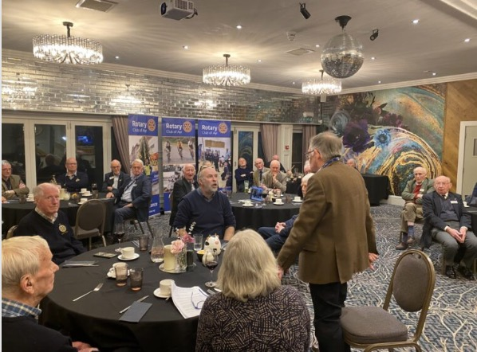

Derek Alexander on Culzean Castle
At a recent Ayr Rotary meeting, we were privileged to hear Derek Alexander's presentation on Culzean. He was brought up in Neilston, East Renfrewshire and qualified from University of Edinburgh with an MA Honours degree in Archaeology and then an MPhil study on the 'Later prehistoric and proto-historic settlement of west central Scotland'.
Derek then went on to work for the Centre for Field Archaeology at the University from 1991 to 2000, and took up current post with the National Trust for Scotland. He is a long standing member of the Renfrewshire Local History Forum Archaeology Section.

Loudon asking a searching question from Derek
He began referring to this glorious 260 acre estate which was once the playground of David Kennedy, 10th Earl of Cassillis - a man who was keen to impress with his wealth and status. Opulent to the extreme, the park is planted with conifers and beech, sculpted around miles of sandy coastline dotted with caves, and finished off with a Swan Pond, an ice house, flamboyant formal gardens and fruit-filled glasshouses.
The castle itself is perched on the Ayrshire cliffs, incorporating everything the earl could wish for in his country home. It was designed by Robert Adam in the late 18th century and is filled to the turrets with treasures that tell the stories of the people who lived there.
Robert Adam, a highly qualified architect (3 July 1728 - 3 March 1792) was a British interior designer. He was the son of (1689-1748), Scotland's foremost architect of the time, and trained under him. In 1945, the Kennedy family gave the castle and its grounds to the National Trust for Scotland (thus avoiding tax) in recognition of General Eisenhower's role as Supreme Commander of the Allied Forces in Europe during the Second World War.
The General first visited Culzean Castle in 1946 and stayed there four times, including once while President of the United States.
Wearing his archaeological hat, Derek launched into the amazing site unearthed findings including a stoneage axe from the Neolithic age from 6000 years ago, a pot from the middle bronze age 2000 to 1500 BC. He also mentioned their caves, from 770 - 900AD beneath the castle which are currently not open generally, but are open for tours throughout the summer. The likelihood is they were used for smuggling.
Loudon McAndrew gave a very worthy vote of thanks.
Share this: